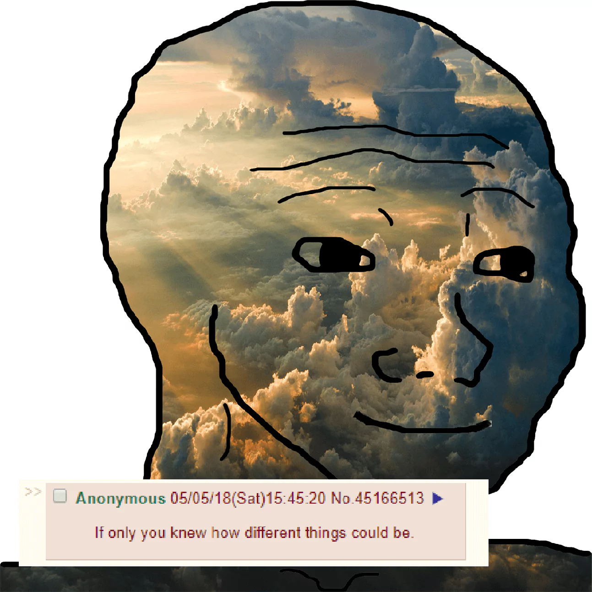
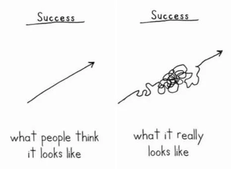
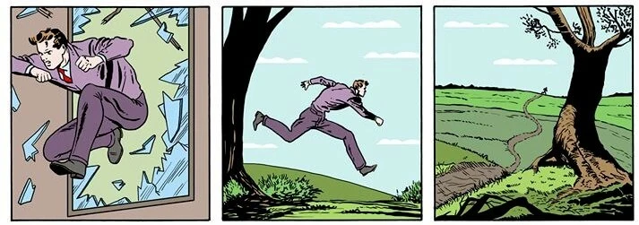

1.0 - Getting Started
"All men dream, but not equally. Those who dream by night, in the dusty recesses of their minds, awake in the day to find that it was vanity. But the dreamers of the day are dangerous men, for they may act their dreams with open eyes to make it reality." - T. E. Lawrence
1.1 - Goal Setting
You are a player playing a game on a field that has no goals. You run up and down the field playing the game for many years, but never scoring, never winning, and never losing. You are simply there. You just exist. You can do nothing more than run up and down the field struggling in vain without the slightest hope of catharsis.
Think about how incoherent it would be if two soccer teams played a game without any marked goals on the field. Their movements and actions would have no meaning. The game would be pointless.
Imagine yourself now waking up in the center of some infinitely large object. You don't know what it is that contains you or how you got there, but you are trapped in a small cave within the object. You look around and realize that there are no holes or openings that you can see so you sit down and wait. After some time the cave you are sitting in begins to shrink. It shrinks and shrinks, faster and faster, pushing you towards the wall, and just when you think you are about to be crushed the wall disappears and a path is revealed. Relieved you travel down the long and dark corridor until you find yourself in another cave. You sit in this cave and wait until the walls begin to close in on you again. Soon the cave is no more and another path is revealed.
A goal is a willful creation of a pathway. Instead of letting the object dictate where you shall next go, you set a goal which opens up a different path before the cave begins to shrink and forces your future. Without goals you will be lost in the object and you will end up nowhere in particular. You must choose your fate before fate is thrust upon you.
1.2 - Finding Life Goals
Hopefully the significance of setting goals has been established. So what should you do now? The first step is to think of large and specific life-long goals.
Sometimes people don't know what their dreams, ambitions, or desires are. They don't know what to do with their life. If this is you then maybe one of these three techniques will help:
- Ask yourself: What's the one thing I would do every day if money were not an issue?
- Imagine: In the frighteningly near future you will find yourself with only a few moments of life left; in these fleeting moments, you will reflect wistfully on things that you wish you had done, and things that you wish you still would have time to do. Close your eyes, relax, and put yourself in this very real and upcoming event. What are you thinking of?
- Imagine: There is an idea of a person in your mind. This person has been in your mind for as long as you can remember. He is perfect in every way. He possesses all of the physical and mental characteristics and attributes that you wish for yourself. Write down clearly all of the characteristics that you imagine of him and work every moment to become this person. Becoming this person and achieving these attributes is your goal. In this perspective, it does not matter what you are doing, but rather who you are being, and if you do this, then what you're doing will work itself out exactly as it should.
Use these techniques to find out precisely what you want out of life, and what you expect of yourself. Don't be afraid to go after dreams that some might call unrealistic because that is indeed the only way you will ever reach them.
"Only as high as I reach can I grow only as far as I seek can I go only as deep as I look can I see only as much as I dream can I be." - Karen Ravn

1.3 - Keeping a Journal and Calendar
Once you know what your life goals are, the next step is to think of the immediate prerequisites to your life goals. Whatever they may be, these are your long-term goals. Now think of the immediate prerequisites to your long-term goals. Keep going in this backwards fashion until you come up with say 5 year goals, 1 year goals, monthly goals, and finally daily goals.
You should have in your mind a progression of goals - daily goals, monthly goals, yearly goals, long-term goals - all leading up to your large life goals. What you have to do now is get a pencil and paper and write them all down.
You should start a journal. On the first page of your journal you should write down all of your goals - each of them defined clearly and connected to other goals like a family tree with your life goal being at the top. And then on each subsequent page you track your progress honestly and coherently by writing in the journal daily.
The next thing you should do is to get a planner or a calender and write down your goals on specific dates. It's important to actually set dates for the completion of your goals so some sort of calender is vital. If you don't have deadlines for things then you'll become lazy and unorganized.
1.4 - Important Things to Keep in Mind
You must be consistent and patient.
"We are what we repeatedly do. Excellence, then, is not an act, but a habit." - Aristotle
"When nothing seems to help, I go look at a stonecutter hammering away at his rock perhaps a hundred times without as much as a crack showing in it. Yet at the hundred and first blow it will split in two, and I know it was not that blow that did it, but all that had gone before." - Jacob Riis
You must be humble. How can you grow in strength and knowledge if you do not acknowledge your weaknesses and ignorance? If you take on the disposition of a know-it-all then you probably aren't in a good position to accept the knowledge and wisdom of others. Being arrogant is to put yourself in a stalemate. You will fail and you will want to give up many times.
I'm sure you've heard the quote "If you can get 1% better every day of the year, you'll be 37 times better by the time you're done". Despite being an excellent goal, this is an unrealistic standard. Success is not linear. You will want to quit and the chances are that you will fall into occasional periods of failure. But don't lose hope; the beauty on the path of self-improvement isn't just the cycles of consecutive days where you successfully marginally improve, but also the temporary massive pitfalls followed by ascension back to the point of success - and you should embrace the passion in all of it.
1.5 - Beginning Now
Procrastination is perhaps the biggest cause of failure. The key to your success is to begin now. Not later or tomorrow. As soon as you say to yourself that you will begin "tomorrow" or "later" then you have already failed because you are starting with the mindset of a procrastinator. It's vital to begin this very moment. Start thinking about your goals right now and write them down.
"Man cannot remake himself without suffering, for he is both the marble and the sculptor." - Alexis Carrel
